토목기사 (2011-03-20 기출문제)
1과목: 응용역학
1. 그림에서와 같이 케이블 C점에서 하중 33kg이 작용하고 있다. 이때 AC케이블에 작용하는 인장력은?
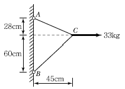
- 17.5kg
- 18.5kg
- 25.5kg
- 26.5kg
(정답률: 55%)

2. 주어진 단면의 도심을 구하면?
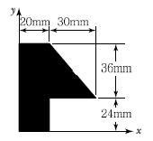
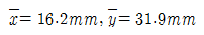
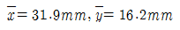
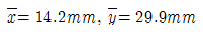
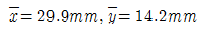
(정답률: 75%)
3. 주어진 보에서 지점 A의 휨모멘트(MA) 및 반력 RA의 크기로 옳은 것은?
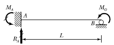
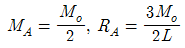
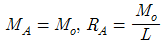
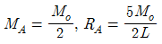
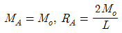
(정답률: 85%)
4. 그림과 같은 T형 단면을 가진 단순보가 있다. 이 보의 지간은 3m이고, 지점으로부터 1m 떨어진 곳에 허용 P＝450kg이 작용하고 있다. 이 보에 발생하는 최대전단응력은?
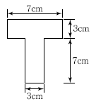
- 14.8kg/cm2
- 24.8kg/cm2
- 34.8kg/cm2
- 44.8kg/cm2
(정답률: 69%)
5. 그림과 같은 2경간 연속보에서 B점이 5cm 아래로 침하하고, C점이 2cm 위로 상승하는 변위를 각각 취했을 때 B점의 휨모멘트로서 옳은 것은?
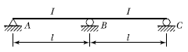
- 20EI/ l2
- 18EI/ l2
- 15EI/ l2
- 12EI/ l2
(정답률: 76%)
6. 그림과 같은 3활절 아치에서 A지점의 반력은?
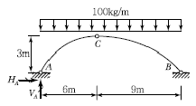
- VA＝750kg(↑), HA＝900kg(→)
- VA＝600kg(↑), HA＝600kg(→)
- VA＝900kg(↑), HA＝1,200kg(→)
- VA＝600kg(↑), HA＝1,200kg(→)
(정답률: 82%)
7. 다음 중 재료의 역학적 성질 중 탄성계수를 E, 전단 탄성계수를 G, 포아송수를 m이라 할 때, 각 성질의 상호관계식으로 옳은 것은?
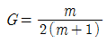
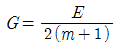
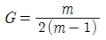
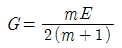
(정답률: 75%)
8. 다음 그림과 같은 보에서 B지점의 반력이 2P가 되기 위해서 b/a는 얼마가 되어야 하는가?
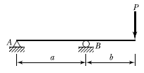
- 0.75
- 1.00
- 1.25
- 1.50
(정답률: 76%)
9. 다음 구조물의 변형에너지의 크기는? (단, E, I, A는 일정하다.)
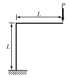
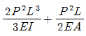
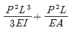
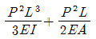
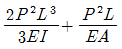
(정답률: 66%)
10. 그림과 같은 단주에 편심하중이 작용할 때 최대 압축응력은?
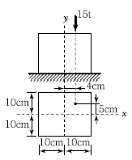
- 138.75kg/cm2
- 172.65kg/cm2
- 245.75kg/cm2
- 317.65kg/cm2
(정답률: 73%)
11. 다음 구조물에서 B점의 수평 방향 반력 RB를 구한 값은? (단, EI는 일정)
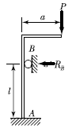
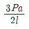
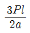
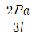
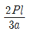
(정답률: 73%)
12. 똑같은 휨모멘트 M를 받고 있는 두 보의 단면이 그림 1 및 그림 2와 같다. 그림 2의 보의 최대 휨 응력은 그림 1의 보의 최대 휨응력의 몇 배인가?
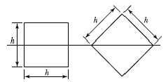
- √2배
- 2√2배
- √5배
- √3배
(정답률: 71%)
13. 양단이 고정된 기둥에 축방향력에 의한 좌굴하중 Pcr를 구하면? (E：탄성계수, I：단면 2차 모멘트, L：기둥의 길이)
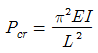
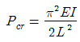
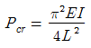
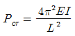
(정답률: 73%)
14. 트러스 해석 시 가정을 설명한 것 중 틀린 것은?
- 부재들은 일단에서 마찰이 없는 핀으로 연결되어진다.
- 하중과 반력은 모두 트러스의 격점에만 작용한다.
- 부재의 도심축은 직선이며 연결핀의 중심을 지난다.
- 하중으로 인한 트러스의 변형을 고려하여 부재력을 산출한다.
(정답률: 73%)
15. 그림과 같은 2축응력을 받고 있는 요소의 체적 변형률은? (단, 탄성계수 E=2×106/cm2, 포아송비 v＝0.2이다.)
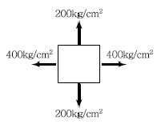
- 1.8×10-4
- 3.6×10-4
- 4.4×10-4
- 6.2×10-4
(정답률: 77%)
16. 그림과 같은 캔틸레보에서 하중을 받기 전 B점의 1cm 아래에 받침부(Bʹ)가 있다. 하중 20t이 보의 중앙에 작용할 경우 B′에 작용하는 수직반력의 크기는? (단, EI= 2.0×1012kg ㆍ cm2이다.)
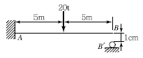
- 200kg
- 250kg
- 300kg
- 350kg
(정답률: 57%)
17. 지름이 d인 강선이 반지름 r인 원통 위로 굽어져 있다. 이 강선 내의 최대 굽힘모멘트 Mmax를 계산하면? (단, 강선의 탄성계수 E=2×106kg/cm2, d＝2cm, r＝10cm)
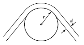
- 1.2×105kg ㆍ m
- 1.4×105kg ㆍ m
- 2.0×105kg ㆍ m
- 2.2×105kg ㆍ m
(정답률: 60%)
18. 그림과 같은 보에서 CD 구간의 곡률반경(曲律半徑)은 얼마인가? (단, 이 보의 휨강도 EI＝3,800t ㆍ m2이다.)
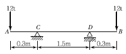
- 924m
- 1,⑤6m
- 1,174m
- 1,283m
(정답률: 64%)
19. 그림과 같은 단순보에 이동하중이 작용할 때 절대 최대 휨모멘트는?
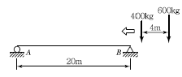
- 3,872kg ㆍ m
- 4,232kg ㆍ m
- 4,784kg ㆍ m
- 5,317kg ㆍ m
(정답률: 81%)
20. 그림과 같은 단면에 전단력 V＝75t 이 작용할때 최대 전단응력은?
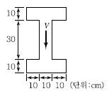
- 83kg/cm2
- 150kg/cm2
- 200kg/cm2
- 250kg/cm2
(정답률: 64%)
2과목: 측량학
21. 삼각형 토지의 3변 길이가 각각 25.4m, 40.8m, 50.6m일 때 축척 1/600 도면상의 면적은?
- 14.3cm2.
- 12.8cm2.
- 0.86cm2
- 0.74cm2
(정답률: 41%)
22. 다음 중 능동적 센서에 해당하는 것은?
- MSS(Multi Spectral Scanner)
- TM(Thematic Mapper)
- TV Camera
- SLAR(Side Looking Ariborne Radar)
(정답률: 67%)
23. 측지형공간정보체계(GIS)의 유형 중 하나로 토지에 대한 정보를 디지털화하고 효율적으로 관리하기 위해 구축하는 시스템을 무엇이라 하는가?
- AMS(Automated Mapping System)
- LIS(Land Information System)
- UIS(Urban Information System)
- FMS(Facility Management System)
(정답률: 67%)
24. 비행고도 5km에서 1：20,000 축척의 항공사진을 촬영했다면 카메라의 초점거리는 얼마인가?
- 10cm
- 25cm
- 35cm
- 50cm
(정답률: 64%)
25. 관측값의 경중률 P와 표준편차 σ 와의 관계는?
- P∝ 1/σ
- P∝ 1/σ2
- P∝ σ
- P∝ σ2
(정답률: 57%)
26. 도로시공에서 단곡선의 외선장(E)은 10m, 교각(I)이 60°일 때에 이 단곡선의 접선장(TL)은?
- 42.4m
- 37.3m
- 32.4m
- 27.3m
(정답률: 65%)
27. 삼각망 조정에 관한 설명 중 잘못된 것은?
- 1점 주위에 있는 각의 합은 360°이다.
- 삼각형의 내각의 합은 180°이다.
- 임의 한 변의 길이는 계산경로가 달라지면 일치 하지 않는다.
- 검기선은 측정한 길이와 계산된 길이가 동일하다.
(정답률: 67%)
28. 홍수 시 급하게 유속관측을 필요로 하는 경우에 편리하여 주로 이용하는 방법은?
- 이중부자
- 프라이스(Price)식 유속계
- 표면부자
- 스크류(Screw)형 유속계
(정답률: 78%)
29. 도로의 단곡선 설치에서 교각 I＝60도°, 곡선 반지름 R＝150m이며, 곡선시점 B.C＝No.8+17m (20mX8+17m)일 때 종단현에 대한 편각은?
- 0°12ʹ45ʺ
- 2°41ʹ21ʺ
- 2°57ʹ54ʺ
- 3°15ʹ23ʺ
(정답률: 54%)
30. 수준측량에서 발생하는 오차에 대한 설명으로 틀린 것은?
- 기계의 조절에 의해 발생하는 오차는 전시와 후시의 거리를 같게 하여 소거할 수 있다.
- 표척의 영눈금의 오차는 출발점의 표척을 도착점에서 사용하여 소거할 수 있다.
- 대지삼각수준측량에서 곡률오차와 굴절 오차는 그 양이 미소하므로 무시할 수 있다.
- 기포의 수평조정이나 표척면의 밝기는 육안으로 한계가 있으나 이로 인한 오차는 일반적으로 허용오차 범위 안에 들 수 있다.
(정답률: 77%)
31. 축척이 1：600인 지도상에서 면적을 1：500 축척인 것으로 측정하여 38.675m2를 얻었다. 실제면적은 얼마인가?
- 26.858m2
- 32.229m2
- 46.410m2
- 55.692m2
(정답률: 65%)
32. 노선 설치방법 중 좌표법에 의한 설치방법에 대한 설명으로 틀린 것은?
- 토털스테이션과 GPS와 같은 장비를 이용할 경우 노선 좌표를 직접 획득할 수 있다.
- 좌표법은 노선의 시점과 종점 및 교점 등과 같은 곡선의 요소들을 입력할 필요가 없다.
- 좌표법에 의한 노선의 설치는 다른 방법보다 지형의 굴곡이나 시통 등의 문제가 적다.
- 평면적인 위치의 측설뿐만 아니라 설계면의 높이까지 측정할 수 있다.
(정답률: 53%)
33. 축척 1/50,000 국가기본도에서 표고 490m의 지점과 표고 3⑤m 지점 사이에 들어가는 주곡선의 수는?
- 7
- 9
- 17
- 19
(정답률: 70%)
34. 직접고저측량을 실시한 결과가 그림과 같을 때, A점의 표고가 10m라면 C점의 표고는? (단, 그림 은 개략도로 실제 치수와 다를 수 있음)
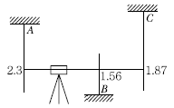
- 9.57m
- 9.66m
- 10.57m
- 10.66m
(정답률: 77%)
35. 직선 AB의 방위각이 128°30ʹ30ʺ이었다면 직선BA의 방위각은?
- 128°30ʹ30ʺ
- 51°29ʹ30ʺ
- 308°30ʹ30ʺ
- 358°29ʹ30ʺ
(정답률: 65%)
36. 평균해발 732.22m인 곳에서 수평거리를 측정하였더니 17,690.819m이었다. 지구를 반지름 6,372.160km의 구라고 가정할 때 평균 해면상의 수평거리는?
- 17,554.688m
- 17,667.880m
- 17,688.786m
- 17,770.688m
(정답률: 53%)
37. 다각측량을 하여 3점의 성과를 얻었다. 이 3점으로 이루어진 다각형의 면적은?
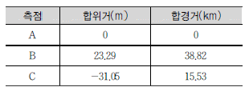
- 693.2m2
- 783.5m2
- 1,386.3m2
- 1,567.1m2
(정답률: 58%)
38. 보기 중 측지원점을 정밀하게 결정하기 위해 필요한 기준타원체의 매개변수에 해당하는 모든 요소로 짝지어진 것은?
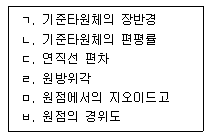
- ㄱ, ㄴ, ㄷ, ㄹ, ㅁ, ㅂ
- ㄱ, ㄴ, ㄷ, ㅁ, ㅂ
- ㄱ, ㄴ, ㄷ, ㅁ
- ㄴ, ㄹ, ㅂ,
(정답률: 54%)
39. 삼변측량에 대한 설명으로 잘못된 것은?
- 전자파거리측량기(E.D.M)의 출현으로 그 이용이 활성화되었다.
- 관측값의 수에 비해 조건식이 많은 것이 장점이다.
- 코사인 제2법칙과 반각공식을 이용하여 각을 구한다.
- 조정방법에는 조건방정식에 의한 조정과 관측 방정식에 의한 조정방법이 있다.
(정답률: 66%)
40. 축척 1/500 지형도를 기초로 하여 축척 1/3,000지형도를 제작하고자 한다. 1/3,000 도면 한 장에는 1/500 도면이 얼마나 포함되는가?
- 16매
- 25매
- 36매
- 49매
(정답률: 69%)
3과목: 수리학 및 수문학
41. 지하수의 흐름에서 Darcy 법칙을 적용하는 레이놀즈 수(Re)의 일반적인 범위는?
- Re ＜ 0.1
- Re ＜ 1~10
- Re ＜ 500
- Re ＜ 2,000
(정답률: 50%)
42. 지름 20cm의 원형 단면 관수로에 물이 가득 차서 흐를 때의 동수반경( R )은?
- 5cm
- 10cm
- 15cm
- 20cm
(정답률: 69%)
43. 강우와 강우해석에 대한 설명으로 옳지 않은 것은?
- 강우강도의 단위는 mm/hr이다.
- DAD 해석은 지속기간별ㆍ면적별 최대강우량을 구하는 방법이다.
- 정상 연강수 비율법(Normal Ratio Method)은 면적평균 강수량을 구하는 방법이다.
- 대류형 강우는 주위보다 더운 공기의 상승으로 일어난다.
(정답률: 54%)
44. “일반적으로 우수 도달시간이 길 경우 첨두유량은 시간적으로는 ( ) 나타나고 그 크기는 ( ).” ( ) 안에 들어갈 알맞은 말이 순서대로 바르게 짝지어진 것은?
- 일찍, 크다
- 늦게, 크다
- 일찍, 작다
- 늦게, 작다
(정답률: 53%)
45. 그림과 같이 지름 3m, 길이 8m인 수로의 드럼게이트에 작용하는 전수압이 수문 ABC에 작용하는 지점의 수심은?
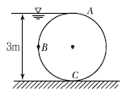
- 2.68m
- 2.43m
- 2.25m
- 2.00m
(정답률: 57%)
46. 수평면상 곡선수로의 상류(常流)에서 비회전흐름의 경우, 유속 V 와 곡률반경 R의 관계로 옳은 것은? (단, C는 상수)
- V=CR
- VR=C
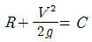
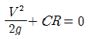
(정답률: 65%)
47. 삼각 위어로 유량을 측정할 때 유랑과 위어의 수심( h )과의 관계로 옳은 것은?
- 유량은 h1/2에 비례한다.
- 유량은 h3/2에 비례한다.
- 유량은 h5/2에 비례한다.
- 유량은 h2/3에 비례한다.
(정답률: 71%)
48. 개수로에서 유량을 측정할 수 있는 장치가 아닌 것은?
- 위어
- 벤투리미터
- 파샬플룸
- 수문
(정답률: 62%)
49. 대규모의 홍수가 발생할 경우 점유 속의 측정에 의한 첨두홍수량의 산정은 큰 하천에서는 실질적으로 불가능한 경우가 많아 간접적인 방법으로 추정하여야 한다. 이러한 방법으로 가장 많이 사용되는 것은?
- 경사－면적방법(Slope－Area Method)
- SCS 방법(Soil Conservation Service)
- DAD 해석법
- 누가우량곡선법
(정답률: 34%)
50. 프루드 수(Froude Number)가 1보다 큰 흐름의 상태는?
- 상류(常流)
- 사류(射流)
- 층류(層流)
- 난류(亂流)
(정답률: 73%)
51. 그림에서 판에 가해지는 힘(Fx)의 크기는? (단, 제트의 유량과 유속은 각각 Q=10m3/s, V=10m/s이다.)
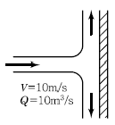
- 9.8t
- 10.2t
- 10.5t
- 11.2t
(정답률: 55%)
52. 일기 및 기후변화의 직접적인 주요 원인은?
- 에너지 소비
- 태양흑점의 변화
- 물의 오염
- 지구의 자전 및 공전
(정답률: 74%)
53. 지하수의 흐름에서 상·하류 두 지점의 수두차가 1.6m이고 두 지점의 수평거리가 480m인 경우, 대수층(帶水層)의 두께가 3.5m, 폭이 1.2m일 때의 지하수 유량은? (단, 투수계수 k=208m/day 이다.)
- 3.82m3/day
- 2.91m3/day
- 2.12m3/day
- 2.08m3/day
(정답률: 67%)
54. 수로의 흐름에서 비에너지의 정의로 옳은 것은?
- 단위 중량의 물이 가지고 있는 에너지
- 수로의 한 단면에서 물이 가지고 있는 에너지를 단면적으로 나눈 값
- 수로의 두 단면에서 물이 가지고 있는 에너지를 수심으로 나눈 값
- 압력 에너지와 속도 에너지의 비
(정답률: 54%)
55. 직경 20cm인 관수로에 39.25cm3/sec의 유량이 흐를 때 동점성 계수가 v =1.0×10－2cm2/sec이면 마찰손실계수 f 는?
- 0.010
- 0.025
- 0.256
- 0.560
(정답률: 63%)
56. 최소 비에너지가 1m인 직사각형 수로에서 단위 폭당 최대유량은?
- 2.89m3/sec
- 2.37m3/sec
- 1.70m3/sec
- 1.28m3/sec
(정답률: 53%)
57. 수면에서 깊이 2.5m에 정사각형 단면의 오리피스를 설치하여 0.042m3/s의 물을 유출시킬 때 정사각형 단면에서 한 변의 길이는? (단, 유량계수는 0.6이다.)
- 10.0cm
- 14.0cm
- 18.0cm
- 22.0cm
(정답률: 62%)
58. 정상적인 흐름에서 1개 유선 상의 유체입자에 대하여 그 속도두수를
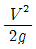
, 위치두수를 Z, 압력두수를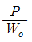
라 할 때 동수경사는?- 를 연결한 값이다.
- 를 연결한 값이다.
- 를 연결한 값이다.
- 를 연결한 값이다.
(정답률: 63%)
59. 강우깊이－유역면적－지속시간(Depth－Area－Duration；DAD) 관계 곡선에 대한 설명으로 옳지 않은 것은?
- DAD 작성 시 대상유역의 지속시간별 강우량이 필요하다.
- 최대평균우량은 지속시간에 비례한다.
- 최대평균우량은 유역면적에 반비례한다.
- 최대평균우량은 재현기간과 반비례한다.
(정답률: 47%)
60. 그림과 같이 높이 2m인 물통에 물이 1.5m만큼 담겨져 있다. 물통이 수평으로 4.9m/sec2의 일정한 가속도를 받고 있을 때, 물통의 물이 넘쳐 흐르지 않기 위한 물통의 길이(L)는?
- 2.0m
- 2.4m
- 2.8m
- 3.0m
(정답률: 52%)
4과목: 철근콘크리트 및 강구조
61. 자중을 포함한 계수하중 80kN/m를 지지하는 그림과 같은 단순보가 있다. 경간은 7m이고,fck＝21MPa, fy＝300MPa일 때 다음 설명 중 옳지 않은 것은?
- 위험 단면에서의 계수전단력은 240kN이다.
- 콘크리트가 부담할 수 있는 전단강도는 114.6kN이다.
- 전단철근(수직 스터럽)의 최대간격은 250mm이다.
- 이론적으로 전단철근이 필요한 구간은 지점으로부터 1.73m까지 구간이다.
(정답률: 58%)
62. 사용 고정하중(D)과 활하중(L)을 작용시켜서 단면에서 구한 휨모멘트는 각각 MD＝30kN ㆍ km, ML＝3kN ㆍ m이었다. 주어진 단면에 대해서 현행 콘크리트 구조설계기준에 따라 최대 소요 강도를 구하면?
- 30kN ㆍ m
- 40.8kN ㆍ m
- 42kN ㆍ m
- 48.2kN ㆍ m
(정답률: 66%)
63. 그림과 같이 철근콘크리트 휨 부재의 최외단 인장 철근의 순인장 변형률(ɛt)이 0.0045일 경우 강도감소계수 φ는 얼마인가? (단, 나선철근으로 보강되지 않은 경우이고, 사용 철근은 fy＝400MPa, ɛy(압축지배 변형률 한계)＝0.002이다.)
- 0.813
- 0.817
- 0.821
- 0.825
(정답률: 70%)
64. 프리스트레스트 콘크리트의 원리를 설명할 수 있는 기본개념으로 옳지 않은 것은?
- 균등질보의 개념
- 내력모멘트의 개념
- 하중평형의 개념
- 변형도 개념
(정답률: 68%)
65. 그림과 같이 단면의 중심에 PS강선이 배치된 부재에 자중을 포함한 계수하중(W)＝30kN/m가 작용한다. 부재의 연단에 인장응력이 발생하지 않으려면 PS강선에 도입하여야 할 긴장력(P)은 최소 얼마 이상인가?
- 2,0⑤kN
- 2,025kN
- 2,045kN
- 2,065kN
(정답률: 71%)
66. 복철근 직사각형 보의 As=4790 이며 As'=1916 이다. 등가 직사각형 블록의 응력 깊이(a)는? (단, fck=21MPa, fy＝300MPa)(오류 신고가 접수된 문제입니다. 반드시 정답과 해설을 확인하시기 바랍니다.)
- 153mm
- 161mm
- 176mm
- 185mm
(정답률: 70%)
67. 정착구와 커플러의 위치에서 프리스트레싱 도입직후 포스트텐션 긴장재의 허용응력은 최대 얼마인가? (단, fpu 긴장재의 설계기준인장강도)
- 0.6fpu
- 0.7fpu
- 0.8fpu
- 0.9fpu
(정답률: 67%)
68. Ag＝180,000mm2, fck=24MPa, fy＝350MPa이고, 종방향 철근의 전체 단면적(Ast)＝4,500mm2인 나선철근기둥(단주)의 공칭축강도(Pn)는?
- 2,987.7kN
- 3,067.4kN
- 3,873.2kN
- 4,381.9kN
(정답률: 62%)
69. 콘크리트 설계기준강도가 24MPa, 철근의 항복강도가 300MPa로 설계된 지간 4m인 단순지지보가 있다. 처짐을 계산하지 않는 경우의 최소 두께는?
- 167mm
- 200mm
- 215mm
- 250mm
(정답률: 60%)
70. 그림과 같은 직사각형 단면의 프리텐션 부재의 편심 배치한 직선 PS강재를 820kN으로 긴장했을 때 탄성변형으로 인한 프리스트레스의 감소량은? (단, I=3.125×109mm4, n＝6이고, 자중에 의한 영향은 무시한다.)
- 44.5MPa
- 46.5MPa
- 48.5MPa
- 50.5MPa
(정답률: 54%)
71. 보 또는 1방향 슬래브는 휨균열을 제어하기 위하여 휨철근의 배치에 대한 규정으로 콘크리트 인장연단에 가장 가까이 배치되는 휨철근의 중심간격(s)을 제한하고 있다. 철근의 항복강도가 300MPa이며 피복두께가 30mm로 설계된 휨철근의 중심간격(s)은 얼마 이하로 하여야 하는가?
- 300mm
- 315mm
- 345mm
- 390mm
(정답률: 44%)
72. bw＝400mm, d＝700mm인 보에 fy＝400MPa인 D16 철근을 인장 주철근에 대한 경사각 α＝60°인 U형 경사 스트럽으로 설치했을 때 전단보강철근의 공칭강도는(Vs)는? (단, 스트럽 간격 s＝300mm, D16 철근 1본의 단면적은 199mm2이다.)
- 253.7kN
- 321.7kN
- 371.5kN
- 507.4kN
(정답률: 29%)
73. 아래 단철근 T형 보에서 다음 주어진 조건에 대하여 공칭모멘트강도(Mn)는? (조건： b=1,000mm, t＝80mm, d＝600mm, As＝5,000mm2, bw＝400mm, fck＝21MPa, fy＝300MPa)
- 711.3kN ㆍ m
- 836.8kN ㆍ m
- 947.5kN ㆍ m
- 1,084.6kN ㆍ m
(정답률: 55%)
74. 도로교의 충격계수(I)식으로 옳은 것은? (단, L은 지간(m))
(정답률: 61%)
75. bw＝280mm, d＝500mm인 단철근직사각형 보가 있다. 강도설계법으로 해석할 때 최소철근량은 얼마인가? (단, fck＝24MPa, fy＝400MPa이다.)
- 430mm2
- 460mm2
- 490mm2
- 520mm2
(정답률: 57%)
76. 그림과 같은 복철근 보의 유효깊이는? (단, 철근1개의 단면적은 250mm2이다.)
- 810mm
- 780mm
- 770mm
- 730mm
(정답률: 69%)
77. 강도설계법에서 휨 부재의 등가사각형 압축응력 분포의 깊이 a=β1c인데, 이 중 fck가 40MPa일 때 β1의 값은?
- 0.766
- 0.801
- 0.833
- 0.850
(정답률: 65%)
78. 콘크리트 설계기준강도가 35MPa이며, 철근의 설계항복강도가 300MPa인 직경이 30mm인 압축이형철근의 기본정착길이는?
- 400mm
- 387mm
- 380mm
- 339mm
(정답률: 58%)
79. 1방향 슬래브의 구조 상세에 대한 설명으로 틀린 것은?
- 1방향 슬래브의 두께는 최소 100mm 이상으로 하여야 한다.
- 슬래브의 정모멘트 철근 및 부모멘트 철근의 중심 간격은 위험단면에서는 슬래브 두께의 3배 이하, 또한 450mm 이하로 하여야 한다.
- 1방향 슬래브에서 수축ㆍ온도철근은 배치할 경우, 정모멘트 철근 및 부모멘트 철근에 직각방향으로 배치한다.
- 슬래브 끝의 단순받침부에서도 내면슬래브에 의하여 부모멘트가 일어나는 경우에는 이에 상응하는 철근을 배치하여야 한다.
(정답률: 59%)
80. 아래 그림과 같은 두께 12mm 평판의 순단면적을 구하면? (단, 구멍의 직경은 23mm이다.)
- 2,310mm2
- 2,340mm2
- 2,772mm2
- 2,298mm2
(정답률: 65%)
5과목: 토질 및 기초
81. 흙 시료의 전단파괴면을 미리 정해놓고 흙의 강도를 구하는 시험은?
- 일축압축시험
- 삼축압축시험
- 직접전단시험
- 평판재하시험
(정답률: 70%)
82. 흙입자의 비중은 2.56, 함수비는 35%, 습윤단위 중량은 1.75g/cm3일 때 간극률은?
- 32.63%
- 37.36%
- 43.56%
- 49.37%
(정답률: 58%)
83. 다짐시험에서 동일한 다짐에너지(Compative Effort)를 가했을 때 건조밀도가 큰 것에서 작아지는 순서로 되어있는 것은?
- SW ＞ ML ＞ CH
- SW ＞ CH ＞ ML
- CH ＞ ML ＞ SW
- ML ＞ CH ＞ SW
(정답률: 55%)
84. 지반 내 응력에 대한 다음 설명 중 틀린 것은?
- 전응력이 커지는 크기만큼 간극수압이 커지면 유효응력이 변화없다.
- 정지토압계수 Ko는 1보다 클 수 없다.
- 지표면에 가해진 하중에 의해 지중에 발생하는 연직응력의 증가량은 깊이가 깊어지면서 감소한다.
- 유효응력이 전응력보다 클 수도 있다.
(정답률: 64%)
85. 절편법에 대한 설명으로 틀린 것은?
- 흙이 균질하지 않고 간극수압을 고려할 경우 절편법이 적합하다.
- 안전율은 전체 활동면상에서 일정하다.
- 사면의 안정을 고려할 경우 활동파괴면을 원형이나 평면으로 가정한다.
- 절편경계면은 활동파괴면으로 가정한다.
(정답률: 45%)
86. 다음 그림과 같이 점토질 지반에 연속기초가 설치되어 있다. Terzaghi 공식에 의한 이 기초의 허용 지지력 qa는 얼마인가? (단, φ = 0이며, 폭(B)＝2m, Nc＝5.14, Nq＝1.0, Nr＝0, 안전율 Fs＝3이다.)
- 6.4t/m2
- 13.5t/m2
- 18.5t/m2
- 40.49t/m2
(정답률: 62%)
87. 흙의 분류에 사용되는 Cassagrande 소성도에 대한 설명으로 틀린 것은?
- 세립토를 분류하는 데 이용된다.
- U선은 액성한계와 소성지수의 상한선으로 U선 위쪽으로는 측점이 있을 수 없다.
- 액성한계 50%를 기준으로 저소성(L) 흙과 고소성(H) 흙으로 분류한다.
- A선 위의 흙은 실트(M) 또는 유기질토(O)이며, A선 아래의 흙은 점토(C)이다.
(정답률: 67%)
88. 응력경로(Stress Path)에 대한 설명으로 옳지 않은 것은?
- 응력경로는 Mohr의 응력원에서 전단응력이 최대인 점을 연결하여 구해진다.
- 응력경로란 시료가 받는 응력의 변화과정을 응력공간에 궤적으로 나타낸 것이다.
- 응력경로는 특성상 전응력으로만 나타낼 수 있다.
- 시료가 받는 응력상태에 대해 응력경로를 나타내면 직선 또는 곡선으로 나타내어 진다.
(정답률: 69%)
89. 일면배수 상태인 10m 두께의 점토층이 있다. 지표면에 무한히 넓게 등분포압력이 작용하여 1년 동안 40cm의 침하가 발생되었다. 점토층이 90% 압밀에 도달할 때 발생되는 1차 압밀침하량은? (단, 점토층의 압밀계수는 CV＝19.7m2/yr이다.)
- 40cm
- 48cm
- 72cm
- 80cm
(정답률: 41%)
90. 토목 섬유의 주요기능 중 옳지 않은 것은?
- 보강(Reinforcement)
- 배수(Drainage)
- 댐핑(Damping)
- 분리(Separation)
(정답률: 59%)
91. 말뚝의 부마찰력에 대한 설명 중 틀린 것은?
- 부마찰력이 작용하면 지지력이 감소한다.
- 연약지반에 말뚝을 박은 후 그 위에 성토를 한 경우 일어나기 쉽다.
- 부마찰력은 말뚝 주변침하량이 말뚝의 침하량보다 클 때 아래로 끌어내리는 마찰력을 말한다.
- 연약한 점토에 있어서는 상대변위의 속도가 느릴수록 부마찰력은 크다.
(정답률: 71%)
92. 조립토의 투수계수를 측정하는 데 적합한 실험 방법은?
- 압밀시험
- 정수위투수시험
- 변수위투수시험
- 수평모관시험
(정답률: 60%)
93. 그림과 같은 점성토 지반의 토질시험결과 내부마찰각 φ = 30°, 점착력 c＝1.5t/m2일 때 A점의 전단강도는?
- 5.31t/m2
- 5.95t/m2
- 6.38t/m2
- 7.04t/m2
(정답률: 64%)
94. 점착력이 5t/m2, rt＝1.8t/m3의 비배수상태(φ = 0)인 포화된 점성토 지반에 직경 40cm, 길이 10cm의 PHC 말뚝이 항타시공 되었다. 이 말뚝의 선단지지력은 얼마인가? (단, Meyerhof 방법을 사용)
- 1.57t
- 3.23t
- 5.65t
- 45t
(정답률: 48%)
95. 그림과 같은 실트질 모래층에서 A점의 유효응력은? (단, 간극비 e＝0.5, 흙의 비중 GS＝2.65, 모세관상승 영역의 포화도 S＝50%)
- 3.04t/m2
- 3.54t/m2
- 4.04t/m2
- 4.54t/m2
(정답률: 43%)
96. 토립자가 둥글고 입도분포가 양호한 모래지반에서 N치를 측정한 결과 N＝19가 되었을 경우, Dunham의 공식에 의한 이 모래의 내부 마찰각 φ는?
- 20°
- 25°
- 30°
- 35°
(정답률: 65%)
97. 투수계수에 영향을 미치는 요소들로만 구성된 것은?
- ①, ②, ④, ⑥
- ①, ②, ③, ⑤, ⑥
- ①, ②, ④, ⑤, ⑦
- ②, ③, ⑤, ⑦
(정답률: 73%)
98. 모래치환법에 의한 현장 흙의 단위무게 시험결과 흙을 파낸 구덩이의 체적 V＝1,650cm3, 흙무게 W＝2,850g, 흙의 함수비 w＝15%이고, 실험실에서 구한 흙의 최대건조밀도 rdmax ＝1.60g/cm3일 때 다짐도는?
- 92.49%
- 93.75%
- 95.85%
- 97.85%
(정답률: 62%)
99. 토질조사에서 사운딩(Sounding)에 관한 설명 으로 옳은 것은?
- 동적인 사운딩 방법은 주로 점성토에 유효하다.
- 표준관입 시험(S. P. T)은 정적인 사운딩이다.
- 사운딩은 보링이나 시굴보다 확실하게 지반구조를 알아낸다.
- 사운딩은 주로 원위치 시험으로서 의의가 있고 예비조사에 사용하는 경우가 많다.
(정답률: 44%)
100. 어떤 시료에 대해 액압 1.0kg/cm2를 가해 각 수직변위에 대응하는 수직하중을 측정한 결과가 아래 표와 같다. 파괴시의 축차응력은? (단, 피스톤의 지름과 시료의 지름은 같다고 보며, 시료의 단면적 Ao＝18cm2, 길이 L＝14cm이다.)
- 3.⑤kg/cm2
- 2.55kg/cm2
- 2.⑤kg/cm2
- 1.55kg/cm2
(정답률: 48%)
6과목: 상하수도공학
101. 정수처리시 염소 소독공정에서 생성될 수 있는 유해물질은?
- 암모니아
- 유기물
- 환원성 금속이온
- THM(트리할로메탄)
(정답률: 72%)
102. 함수율 95%인 슬러지를 농축시켰더니 최초 부피의 1/3이 되었다. 농축된 슬러지의 함수율(%)? (단, 농축 전후의 슬러지 비중은 1로 가정한다.)
- 65
- 70
- 85
- 90
(정답률: 57%)
103. 오존처리법의 특성에 대한 설명으로 틀린 것은?
- 자체의 높은 산화력으로 염소에 비하여 높은 살균력을 가지고 있다.
- 유기물질의 생분해성을 증가시킨다.
- 철ㆍ망간의 산화능력이 크다.
- 소독의 잔류효과가 크다.
(정답률: 63%)
104. 수원으로부터 취수된 상수가 소비자까지 전달되는 일반적인 상수도의 구성순서로 옳은 것은?
- 도수－정수장－송수－배수지－급수－배수
- 송수－정수장－도수－배수지－급수－배수
- 도수－정수장－송수－배수지－배수－급수
- 송수－정수장－도수－배수지－배수－급수
(정답률: 66%)
1⑤. 그림과 같은 단면을 갖는 수로를 흐르는 물의 유속은? (단, Manning 공식을 사용하고, 조도계수＝0.017, 동수경사＝0.003)
- 2.42m/sec
- 2.52m/sec
- 2.59m/sec
- 2.68m/sec
(정답률: 43%)
106. 도·송수에 대한 설명으로 옳은 것은?
- 관의 일부가 동수경사선보다 높을 때, 도 ㆍ 송수의 효율이 향상된다.
- 도 ㆍ 송수의 효율을 높여주기 위하여 시점의 고수위와 종점의 저수위를 동수경사로 한다.
- 도 ㆍ 송수는 최소 동수경사로 하며, 시점의 최저 수위와 종점의 최고 수위를 동수경사로 하는 경우이다.
- 도 ㆍ 송수는 최고 동수경사로 하며, 이를 위해 항상 상류 측 관의 지름을 하류 측보다 크게 한다.
(정답률: 37%)
107. 유입수량 100m3/min, 침전지용량 4,000m3, 폭20m, 길이 50m, 수심 4m인 경우의 수면적 부하는?
- 720m3/m2 ㆍ day
- 144m3/m2 ㆍ day
- 1,800m3/m2 ㆍ day
- 6m3/m2 ㆍ day
(정답률: 65%)
108. 계획하수량의 산정방법으로 틀린 것은?
- 오수관거：계획 1일 최대오수량＋ﾌ계획우수량
- 우수관거：계획우수량
- 합류식 관거：계획 시간 최대오수량＋O계획우수량
- 차집관거：우천시 계획오수량
(정답률: 65%)
109. 하수의 배제방식 중 분류식 하수관거의 특징이 아닌 것은?
- 처리장 유입하수의 부하농도를 줄일 수 있다.
- 우천시 월류의 위험이 없다.
- 처리장으로의 토사유입이 적다.
- 처리장으로 유입되는 하수량이 비교적 일정하다.
(정답률: 51%)
110. 자연유하식의 도수관 내 평균유속의 최대한도 와 최소한도로 옳게 짝지어진 것은?
- 3.0m/s－0.3m/s
- 3.0m/s－0.5m/s
- 5.0m/s－0.3m/s
- 5.0m/s－0.5m/s
(정답률: 80%)
111. 활성슬러지법과 비교하여 생물막법의 특징으로 옳지 않은 것은?
- 운전조작이 간단하다.
- 하수량 증가에 대응하기 쉽다.
- 반응조를 다단화하여 반응효율과 처리안정성 향상이 도모된다.
- 생물종 분포가 단순하여 처리효율을 높일 수 있다.
(정답률: 61%)
112. 펌프의 비속도( N s )에 대한 설명으로 옳은 것은?
- Ns가 작게 되면 사류형으로 되고 계속 작아지면 축류형으로 된다.
- Ns가 커지면 임펠러 외경에 대한 임펠러의 폭이 작아진다.
- Ns가 작으면 일반적으로 토출량이 적은 고양정의 펌프를 의미한다.
- 토출량과 전양정이 동일하면 회전속도가 클수록 Ns가 작아진다.
(정답률: 67%)
113. 부영양화 현상에 대한 특징을 설명한 것으로 옳지 않은 것은?
- 사멸된 조류의 분해작용에 의해 표수층으로부터 용존산소가 줄어든다.
- 조류합성에 의한 유기물의 증가로 COD가 증가한다.
- 일단 부영양화가 되면 회복되기 어렵다.
- 영양 염류인 인(P), 질소(N) 등의 유입을 방지하면 이 현상을 최소화할 수 있다.
(정답률: 38%)
114. 상수도의 완속여과지에 관한 설명으로 틀린 것은?
- 균등계수는 2 이하, 유효입경은 0.3~0.45mm이 어야 한다.
- 모래의 최대 입경은 5.0mm를 초과하지 않아야 한다.
- 모래층의 두께는 70~90cm를 표준으로 한다.
- 여과속도는 보통 4~5m/d를 표준으로 한다.
(정답률: 49%)
115. 하수처리장에서 480,000L/day의 하수량을 처리한다. 펌프장의 습정(Wet Well)을 하수로 채우기 위하여 40분이 소요된다면 습정의 부피는 몇 m3인가?
- 12.3m3
- 13.3m3
- 14.3m3
- 15.3m3
(정답률: 64%)
116. 다음의 취수시설에 대한 설명 중 틀린 것은? (단, 하천수를 수원으로 하는 경우)
- 취수탑은 최소수심이 2m 이상인 장소에 위치하여야 한다.
- 취수문은 유속이 큰 지역에 주로 설치되므로 토사의 유입 위험이 거의 없다.
- 취수보는 일반적으로 대하천에 적당하다.
- 취수문의 위치는 지반이 견고한 지점에 위치하여야 한다.
(정답률: 58%)
117. 하수처리에 관한 설명으로 옳은 것은?
- 일반적인 하수처리는 생물학적 처리와 화학적 처리만을 의미한다.
- 침전과정은 다양한 하수처리방법 중 주로 생략할 때가 많다.
- 활성슬러지법은 주로 호기성 미생물에 의한 생물학적 하수처리방법이다.
- 회전원판법은 일종의 스크린을 이용한 물리적처리방법이다.
(정답률: 57%)
118. 계획 1일 평균급수량의 특징으로 틀린 것은?
- 소도시는 대도시에 비해서 수량이 적다.
- 공업이 번성한 도시는 소도시보다 수량이 크다.
- 기온이 높은 지방이 추운 지방보다 수량이 크다.
- 수도시설 설계시 취수시설의 용량산정 기준으로 직접 사용된다.
(정답률: 63%)
119. 토사의 한계유속 공식인 Darcy－Weisbach 공식에 이용되는 인자가 아닌 것은? (문제 오류로 실제 시험에서는 모두 정답처리 되었습니다. 여기서는 1번을 누르면 정답 처리 됩니다.)
- 마모계수
- 중력가속도
- 입자의 직경
- 입자의 비중
(정답률: 71%)
120. 강우강도 , 유역면적 1.26km2, 유입시간 5분, 유출계수 C＝0.5, 관 내의 유속이 1.5m/sec인 경우 관길이 900m인 하수관으로 흘러나오는 우수량은?
- 14m3m/sec
- 12m3m/sec
- 10m3m/sec
- 8m3/sec
(정답률: 65%)